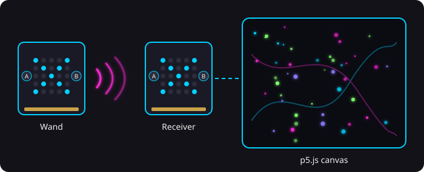

About Me
I'm a passionate web developer with expertise in HTML, CSS, and JavaScript. I love turning ideas into reality through code and design.
When I'm not coding, you can find me exploring new technologies, reading tech blogs, or enjoying a good cup of coffee.
My Projects
Micro:bit Algorave Visualizer
A visualizer for live VJ shows. Glowing particles flow across a big canvas, and you steer them by tilting a Micro:bit wand in your hand.
The visuals are built with the p5.js library and run in the browser, with 80 particles. They move using the tilt values from the Micro:bit and wrap around the screen edges.
We use two Micro:bits. The wand runs on a battery and sends its tilt and button data over radio. The second one is plugged into the computer and passes the data to the p5.js sketch with Web Serial. This way nothing is tied to a USB cable.
Button A on the receiver starts the show. Button B on the wand changes the color palette. The A+B combos on the wand and the receiver change how many particles there are and turn on Drop / Glitch Mode.
The final look has 90s neon colors and motion blur trails. We tested it in the blackbox theater to set the tilt sensitivity and make it easy to see from far away.

View Project 🌐Get In Touch
Have a project in mind? Let's work together!